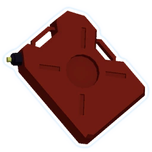

This table details my favorite item combinations, including what items are required and how they work together. :)
| Combo | Items | Description | ||||
|---|---|---|---|---|---|---|
| Luck Shenanigans | 57 Leaf Clover | ATG Missile | Pocket I.C.B.M. | This is easily my favorite item combination in the game. The way it
works is that the clover will effectively proc the
missiles almost twice as often
(if theres a 10% chance for missiles to proc, and you have one clover, there is
a 19% chance for the missiles to proc). Eventually the missiles and will start to proc off of themselves, and you end up with a near a constant stream of missiles, which will automatically track down and kill everything on the stage. |
||
| All random effects are rolled +1 (+1 per stack) times for a favorable outcome. | 10% chance to fire a missile that deals 300% (+300% per stack) TOTAL damage. | All missile items and equipment fire an additional 2 missiles. Increase missile damage by 0% (+50% per stack) | ||||
| AFK Stage Clear | Gasoline | Ignition Tank | Soulbound Catalyst | Forgive Me Please | Gesture of the Drowned | This combo uses the equipment Forgive Me Please to activate your on-kill effects repeatedly and infinitely, killing everything around you very quickly. if you have enough gasoline, (ideally 30-40), every enemy on the stage will die before you even see them. the best part is that Gesture of the Drowned will activate FMP for you, meaning you dont have to push any buttons anymore! |
|  |

|
|||||
| Killing an enemy ignites all enemies within 12m (+4m per stack) for 150% base damage. Additionally, enemies burn for 150% (+75% per stack) base damage. | Ignite effects deal +300% (+300% per stack) more damage over time. | Kills reduce equipment cooldown by 4s (+2s per stack). | Throw a cursed doll out that triggers any On-Kill effects you have every 1 second for 8 seconds. | Reduce Equipment cooldown by 50% (+15% per stack). Forces your Equipment to activate whenever it is off cooldown. | ||
| Minigun | Lens-Maker's Glasses | Predatory Insticts | Shatterspleen | Plasma Shrimp | Pocket I.C.B.M. | This combo relies on getting critical hits, so it's ideal to stack 10 Lens-Maker's Glasses to get to 100% crit rate, and then as many predatory insticts as you can find, as more stacks will increase the amount by which your attack speed will increase. Then, by shooting an enemy, your attack speed will get faster and faster over time, with each hit causing plasma shrimp and I.C.B.M to shoot out a ridiculous amount of missiles at the target, which then bleeds and explodes due to shatterspleen. |

|
||||||
| Your attacks have a 10% (+10% per stack) chance to 'Critically Strike', dealing double damage. | Gain 5% critical chance. Critical strikes increase attack speed by 12%. Maximum cap of 36% (+24% per stack) attack speed. | Gain 5% critical chance. Critical Strikes bleed enemies for 240% base damage. Bleeding enemies explode on death for 400% (+400% per stack) damage, plus an additional 15% (+15% per stack) of their maximum health. | Gain a shield equal to 10% of your maximum health. While you have a shield, hitting an enemy fires a missile that deals 40% (+40% per stack) TOTAL damage. Corrupts all AtG Missile Mk. 1s. | All missile items and equipment fire an additional 2 missiles. Increase missile damage by 0% (+50% per stack) | ||
| Squid Party | Remote Caffeinator | Squid Polyp | Bundle of Fireworks | Bustling Fungus | This combo uses the equipment Remote Caffeinator, which summons an interactable you can activate, to repeatedly activate your Squid Polyps and Fireworks, as well as healing you and the Squid Turrets continually with both Remote Caffeinator and Bustling Fungus. The way the game deals with the Squid Turrets 30 second duration is by making them slowly lose health over time until they hit 0 and dissapear. So by healing them continuously, they can last for as long as you hold still and interact with the Remote Caffeinator. I like this combo's name because theres a constant flow of drinks, fireworks and mushrooms, just like a good party. | |
| Request an Eclipse Zero Vending Machine from the UES Safe Travels. Delivery guaranteed in 5 seconds, dealing 2000% damage. Heal up to 3 targets for 25% of their maximum health. | Activating an interactable summons a Squid Turret that attacks nearby enemies at 100% (+100% per stack) attack speed. Lasts 30 seconds. | Activating an interactable launches 8 (+4 per stack) fireworks that deal 300% base damage. | After standing still for 1 second, create a zone that heals for 4.5% (+2.25% per stack) of your health every second to all allies within 3m (+1.5m per stack). | |||